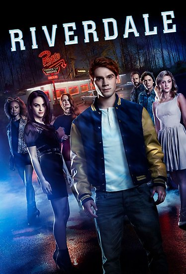
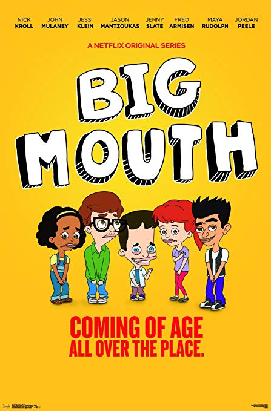

Stranger Things

the story arranged during the 80s, in the fictional town of Hawkins, Indiana, when a boy named Will Byers disappears, a fact that uncovers the strange events that take place in the area, the product of a series of experiments carried out by the government in a nearby scientific laboratory.
Riverdale
the events that have taken place during the summer, have made Archie Andrews realize that he wants to pursue a musical career and not the steps of his father. ... When a new student, Veronica Lodge, arrives in Riverdale from New York, with her mother, the spark is born between her and Archie.
The 100
The story is centered on what happens with civilization almost a hundred years after a nuclear war has devastated it. ... The future of the survival of the human race is in the hands of some young criminals who managed to flee and save themselves from war. These have since lived in a spaceship.
Flash
The Flash is an American television series developed by Greg Berlanti, Andrew Kreisberg and Geoff Johns for The CW. The pilot episode was directed by Ángel David R.O. The story is based on the DC Comics superhero, Flash, specifically Barry Allen, the second individual to take that identity.
The Paper House
The Paper House tells what is expected to be the perfect robbery at the National Mint and Doorbell Museum. The mind that conceived this plan is The Professor, a man who recruits seven people to carry out the great blow.
Arrow
Arrow is a television series about the DC Comics character Green Arrow. ... After a violent shipwreck, billionaire playboy Oliver Queen had disappeared and left for five years before being discovered alive on a remote island in the Pacific.
Hounted Hill House

The curse of Hill House is a horror series set in the Hill House, built 80 years ago. ... Based on the book 'The Curse of Hill House' by Shirley Jackson, Netflix's scary fiction stars Michiel Huisman (Game of Thrones), in the role of the writer.
Once Upon a Time
The story of a new world, in which fairy tales and modern life collide. Emma Swan is happy with her life; Henry, his son who left a decade ago, suddenly introduces himself and believes that she is the daughter of Snow White and the Blue Prince.
ZOO
Zoo is the new CBS thriller that is based on the novel by James Patterson. Zoo's plot revolves around Jackson Oz, an analyst who has had serious problems with environmentalists, professional biologists and academics.
Big Mouth
Big Mouth is an adult animated comedy that tells the adventures of Nick and Andrew, two teenage friends who are going through all the changes that puberty brings. ... This Netflix series has been created by Nick Kroll, Andrew Goldberg, Mark Levin, and Jennifer Flackett.
Elite

Elite is a Spanish production for Netflix in which its history takes place in Las Encinas, an exclusive school in the country. There they go to study the children of the elite. ... Fiction is created by Carlos Montero (Physics or Chemistry) and Darío Madrona (Genesis), two writers and scriptwriters recognized in Spain.
The Walking Dead
The series is set in a post-apocalyptic world and stars Rick Grimes (Andrew Lincoln), a police officer who wakes up from a coma and finds that civilization has disappeared due to an inexplicable phenomenon that causes dead people to wear stand up and attack living people ...